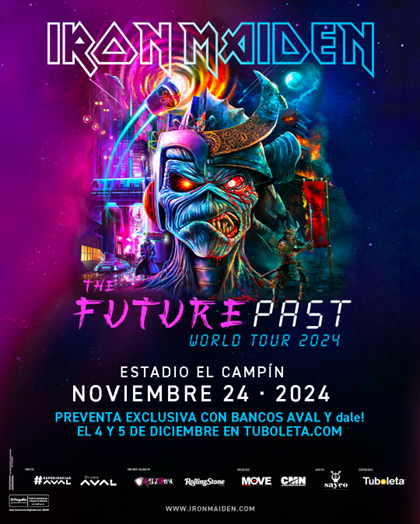
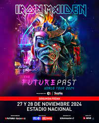

COLOMBIA!
La banda británica de haeavy metal se presentará el próximo 24 de noviembre del 2024 en el estadio El Campín. Este lunes 27 de noviembre la agrupación británica Iron Maiden, anunció que dentro de su nueva gira denominada 'The Future Past Tour', está incluida Bogotá para el próximo año.

CHILE!
Tras sus aplaudidas presentaciones este año por Europa, en el oeste de Canadá y en el reciente PowerTrip Festival de California, la icónica banda británica Iron Maiden regresará a Chile con su espectacular Future Past Tour el próximo año.
MEXICO!
Iron Maiden anuncia concierto en Foro Sol de CDMX: Fechas y precios tentativos. Este lunes la famosa banda británica de heavy metal, Iron Maiden, confirmó que tendrá un concierto en la Ciudad de México el 20 de noviembre de 2024 en el Foro Sol como parte de su "Future Past World Tour 2024".